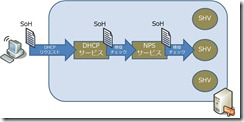
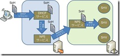
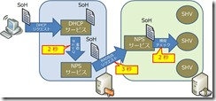
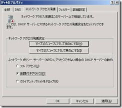
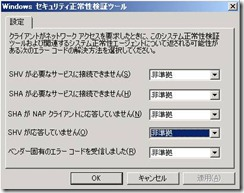

本記事は 2010 年 6 月 21 日に公開された記事を本ブログに移行した記事になります。
NAP に関するお問い合わせの中でも多いのが、「予期せずクライアントが隔離されてしまった」「隔離されるはずのクライアントが、フルアクセスを許可されてしまう」といったものです。
今回はその中から、DHCP 検疫を使用している場合に、NPS サービスの検疫結果を待たずに DHCP サービスがタイムアウトしてしまう事例をご紹介します。
- DHCP 検疫の仕組みの概要
DHCP 強制クライアントが有効に設定されているクライアントでは、DHCP サーバーにリクエストを送信する際に、クライアントの正常性ステートメント (SoH) の情報を含めます。このリクエストを受け取った DHCP サーバー上の DHCP サービスは、NPS サービスに SoH を引き渡し、検疫チェックを要求します。
DHCP サーバーと NPS サーバーは別々の筐体に分けることもできますが、同一の筐体上に同居させることもできます。最も簡単な構成の場合、下の図のように、DHCP サーバー上に NPS サービスもあわせてインストールし、検疫チェックのポリシーを構成することで、1 台のサーバーのみで DHCP 検疫を実現することができます。

DHCP サーバーと NPS サーバーを分離する場合は、少し複雑な処理の流れになります。下の図のように、DHCP リクエストを受け取った DHCP サービスはまず、自身のサーバー上の NPS サービスに検疫チェックの処理を依頼します。このリクエストを受け取った NPS サービスは、RADIUS Proxy として機能し、NPS サーバー上の NPS サービスに対して検疫チェックのリクエストを転送します。処理の流れは、下図のようになります。

このような構成を行うためには、DHCP サーバー上の NPS サービスで、リモート RADIUS サーバーを構成する必要があります。
(主に、冗長化を目的として、この構成が使用されます。 )
- 既定のタイムアウト値はどうなってるの？
全ての処理、通信などが理想的な環境で行われた場合、検疫チェックの結果が期待通りとなるのは当然のことですが、実際にはサーバーやネットワークの負荷などが原因で、応答が遅れたり、返ってこなかったりする場合があります。このため、それぞれの処理のタイミングにタイムアウト値が設定されていて、それ以上待っても応答がなさそうであれば、処理に失敗したものと見なされます。
さて、では既定のタイムアウト値は・・・というと、ずばり、下図の通りとなっています。

これを見て、「あれ？」と思う方も少なくないかもしれません。
DHCP サーバーが RADIUS Proxy と動作する際、RADIUS リクエストがドロップしたと見なされるまでのタイムアウト値が 3 秒なのに対して、
DHCP サービスは検疫チェックのリクエストを投げた後、2 秒以内に応答がなければタイムアウトと判定してしまいます。
このため、NPS サーバーからの応答が例えば 2.5 秒後に返って来た場合は、DHCP サービスは先に応答を待つのを諦めてしまって、クライアントに応答を返してしまう結果となるのです。
既定の値がこのように設定されてしまっているので、場合によっては、NPS サーバーが正常に応答を返しているように見えるのに、クライアントが DHCPサーバーから受け取る IP アドレスが予期しないものになっていた・・・という結果が起こりえることになります。
- タイムアウトと判定された場合の動作は？
タイムアウトと判定された場合にどのように動作するかは、それぞれ、下記の通りとなります。
① DHCP サービスが時間内に応答を受け取れない場合
DHCP サービスがタイムアウト値の時間内に応答を受け取れない場合の動作は、下記の画面で設定します。

** DHCP サーバー上で、[管理ツール] - [DHCP] - [IPv4] - [プロパティ] - [ネットワーク アクセス保護] タブを開く
画面の通り、NPS からの応答を待たず、設定に従ってクライアントにアドレスを割り当てます。
ここで、”制限付きアクセス” を設定した場合、予期しない NPS サーバーの障害や負荷の上昇などが原因で、ポリシーに準拠した正常なクライアントが隔離されてしまう可能性があります。このため、システムの可用性を重視するのであれば、ここを “フル アクセス” に設定していただくことがお勧めです。
② RADIUS Proxy として動作する DHCP サーバー上の NPS サービスが、時間内に応答を受け取れない場合
RADIUS Proxy として動作する DHCP サーバー上の NPS サービスが、タイムアウト値の時間内に応答を受け取れない場合は、自動的に 3 回の再送を行います。複数の NPS サーバーへの負荷分散を行っている場合、その重み付けなどの設定に応じて、どのサーバーに RADIUS リクエストを再送するかは異なります。3 回再送しても応答が返されない場合は、要求をあきらめます。
③ SHV による検疫チェックの処理がタイムアウトした場合
NPS サーバー上で、SHV による検疫チェックの処理がタイムアウトした場合は、その結果を準拠と見なすか非準拠と見なすかを下記の画面で設定することができます。

** NPS サーバー上で [管理ツール] - [ネットワーク ポリシーサーバー] - [システム正常性検証ツール] - [<SHV の設定名>] - [エラー コード] - [プロパティ] を開く
この設定を [準拠] とした場合は、SHV からの応答が返ってこなかった場合でも、当該 SHV による検疫チェックは正常であったと判定します。
- 可用性を重視するか、セキュリティを重視するか。
上記の通り、NAP の仕組みの中では、様々な処理においてタイムアウト値が設定されています。特に、DHCP サービスが NPS サービスからの応答を待つ時間は既定で 2 秒とかなり短い値に設定されており、意図せずポリシー非準拠の端末にフルアクセスを許可したり、逆にポリシーに準拠した端末が隔離されたり、といった問題が実際に報告されております。
上記のように、仕組み上、タイムアウトによって検疫チェックが正常に行えない状況において、クライアントを準拠と見なすか非準拠と見なすかを、あらかじめ考えておく必要があります。
これは、可用性を重視するか、セキュリティを重視するかの選択になりますので、お客様のポリシーに依存する部分ではあります。システムへの影響度などを考慮した上で、適切な設定を行っていただけるよう、お願いいたします。
(ご参考)
DHCP サービスが NPS サービスの応答を待つタイムアウト時間 (既定値: 2 秒) は、下記のレジストリを設定することで、変更することができます。
キー名 : HKLM\System\CurrentControlSet\Services\DhcpServer\Parameters
値 : IasDelay (REG_DWORD)
既定値 : 2000 (msec)
最小値 : 100 (msec)
** DHCP サービスの再起動が必要です。
タイムアウト値の変更によって、副次的に問題が発生する可能性もあるので、導入前のテストは必要かとは思いますが、NPS からの応答が遅れがちな場合は有効な対処方法となるかもしれません。
[特記事項]
本情報の内容（添付文書、リンク先などを含む）は、作成日時点でのものであり、予告なく変更される場合があります。